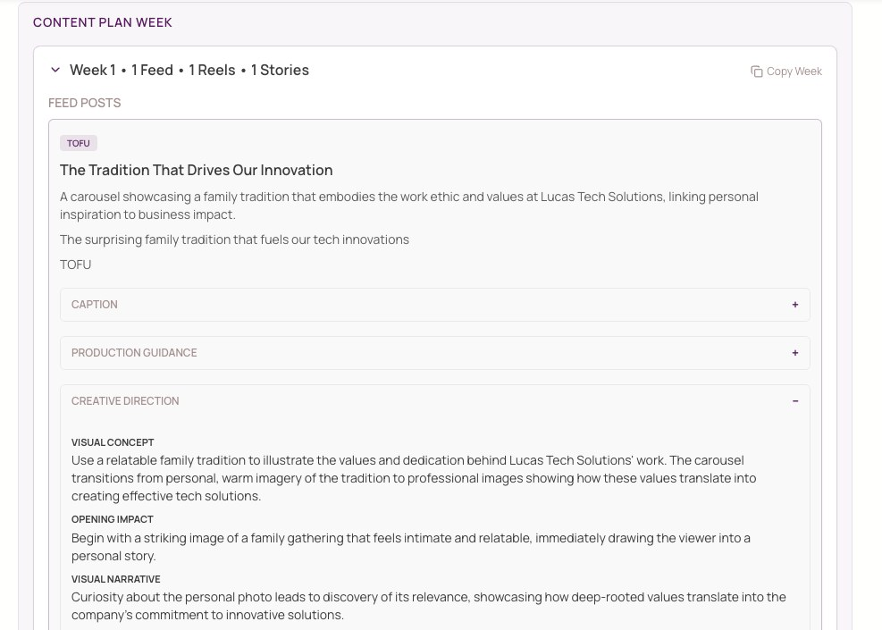
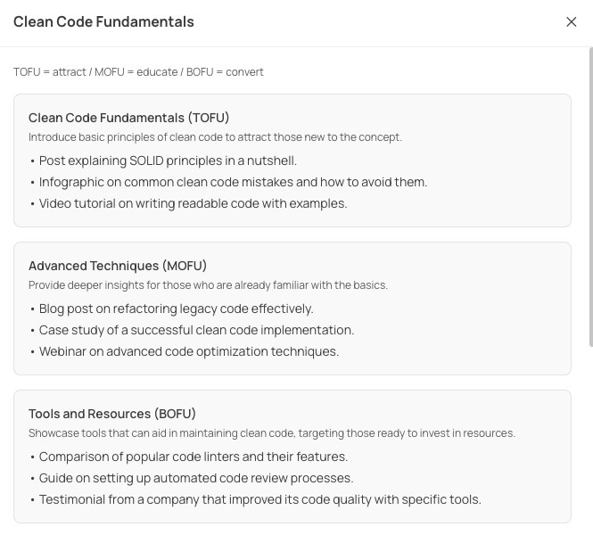

- Business Profile and Content Strategy
- A weekly plan with 1–5 content items per week: static, video or stories
- A ready-to-make brief for every item: hook, goal, funnel stage, creative direction, caption and production guidance
- Revision suggestions in chat, which you copy into your plan
Duke, by HustleQ · content planning for small businesses
Never wonder what to post again.
Duke turns what you know about your business into a clear weekly content plan: what to create, why it matters, and how to make it.
A plan that fits A plan that fits this week’s promo, a new launch, your next event or a slow month.
Free Waitlist. No payment needed.Answer five questions, get one post idea.
Concept preview · Duke Stream is in development
Example business
Context · from the Business Profile
- Business
- Events and meal delivery
- Goal
- [from the profile]
- Audience
- [from the profile]
Pattern detected
Event weeks need content that shows the service before guests arrive.
Recommendation
CLIENT_PHOTO_01
Video sequenceAwareness
The hour before the doors open
Hook: “Everything you see at an event starts here.”Why this postIt connects the strategy (show the care behind each event) to a format that works in this week’s plan.
Illustrative text. Replace with DUKE_EXAMPLE_01.
Being consistent was never the hard part.Knowing what to say was.
Product · section 3
From your business to this week’s content.
Duke starts with what you tell it about your business, builds a content strategy, and plans each week as content items you can actually make.
01Business ProfileWhat you sell, who it is for, your goals and voice.
02Content StrategyBuilt from your goal and business context.
03Weekly PlanPick a strategy, add this week’s context, choose 1–5 content items per week.
Weekly Plan · Week 1Illustrative · 1–5 content items per week
1 / 5
Approve the week. The next week is planned when your plan has more than one. · DUKE_WEEKLY_PLAN

Inside a content item
One post, ready to make.
Every item in a weekly plan arrives as a short brief. Tap through one example.
Illustrative example · not live dataWhat the post is about.
What the post is about.The hour before the doors open. Show the setup before an event, so people see the care before they see the party.
The hour before the doors open. Show the setup before an event, so people see the care before they see the party.
The first line or shot that stops the scroll.“Everything you see at an event starts here.”
What the post should achieve.Awareness. Reach people who do not know the business yet.
Where it sits in the audience’s journey.Top of funnel: a first contact, not a sales pitch.
How it should look and feel.Close-ups of hands finishing a dish, natural light. A wide shot of the room being set. Cut on the doors opening.
The text that goes with the post.Before the first guest arrives, there are hours of work you never see. This is that hour. Planning an event? Send us a message.
Practical notes to make it.Shoot on a phone, vertical. Three clips of 3 to 5 seconds. Film before guests arrive. Keep the real sound.
The strategy comes from your profileYou pick a strategy when you create the plan, then add this week’s context. No blank page.
Each item has a jobFormat, objective and funnel stage are decided before the idea.
Ready to make, not just ideasCreative direction tells you what to shoot. You make it and post it.
No. 4
The Work ↓
Before Duke was an app, we did this by hand, every week, for real businesses.
Here is some of that work.
The Work05
Work we made by hand.
Content our team planned and made for real businesses, before Duke. Each project opens into its own case.
All work →The service came first. Duke is how we package what it taught us.
We did the work by hand.
We saw what worked.
We built Duke to plan that way.
Content Strategy
07Start every plan from a strategy.
Give Duke a business objective and some context in your own words. It builds a Content Strategy with content pillars, objectives, audience behavior goals and content ideas. When you create a plan, you pick the strategy and add what is happening that week.
01You set a business objective and add free-form context.
02Duke builds pillars, objectives, audience goals and content ideas.
03You pick that strategy when you create a plan, and add this week’s context.

08Ways in
Two ways to work with us.
Starting at $750/month
A higher-touch collaboration for a small number of businesses. Selected partners work with our team on their content and help shape how Duke develops.
- A monthly meeting to set direction
- Daily communication with our team
- HustleQ creates the content, you approve it, HustleQ publishes
09FAQ
Questions, answered.
Is this another AI tool?
Duke runs on AI. That is the engine, not the point. What you get is a plan: what to make, in what format, with what goal.
When can I use Duke?
Access opens in groups as Duke becomes available. Join the Free Waitlist and we will email you when Duke is ready for you. We are not promising a date.
What does it cost?
The Free Waitlist is free. Duke First Access is an optional, one-time, refundable $20 payment. The Founding Partner Program starts at $750/month.
What is Duke First Access?
An optional, one-time, refundable $20 payment, offered after you join the Free Waitlist. It puts you ahead of Free Waitlist members in the launch queue, even those who joined before you. It does not guarantee immediate access or an access date.
Does Duke post for me?
No. Duke plans and writes. You make the content and post it. If you want it done with you, that is the Founding Partner Program.
How much content per week?
You choose 1–5 content items per week.
Can I change something Duke wrote?
Yes. Ask Duke for a revision in the chat, then copy it into your plan.
Who is the Founding Partner Program for?
Businesses that want to work closely with our team on their content and help shape Duke. It starts at $750/month and applications are reviewed one by one. Apply here.
Join10
Tell us about your business.
Join the Free Waitlist, or apply to the Founding Partner Program.